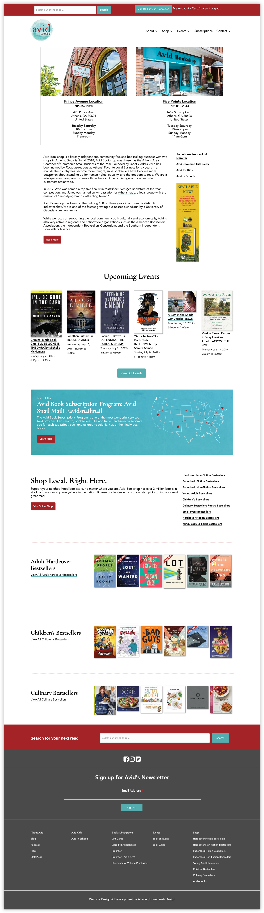
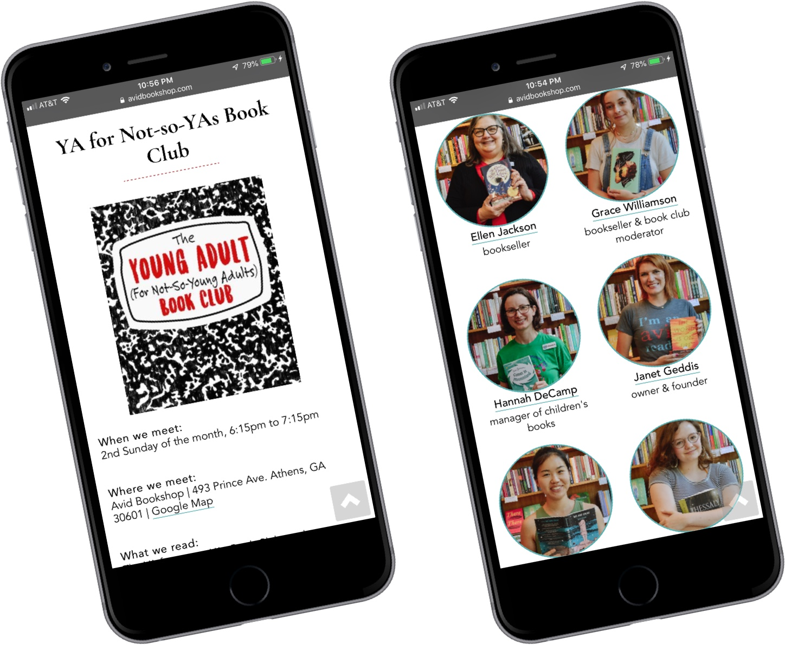
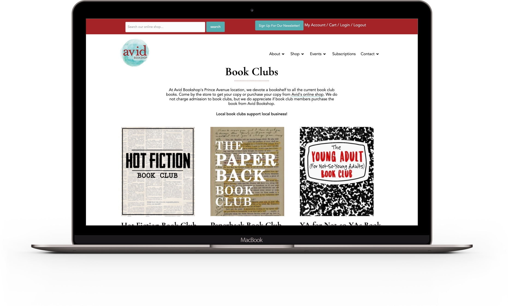
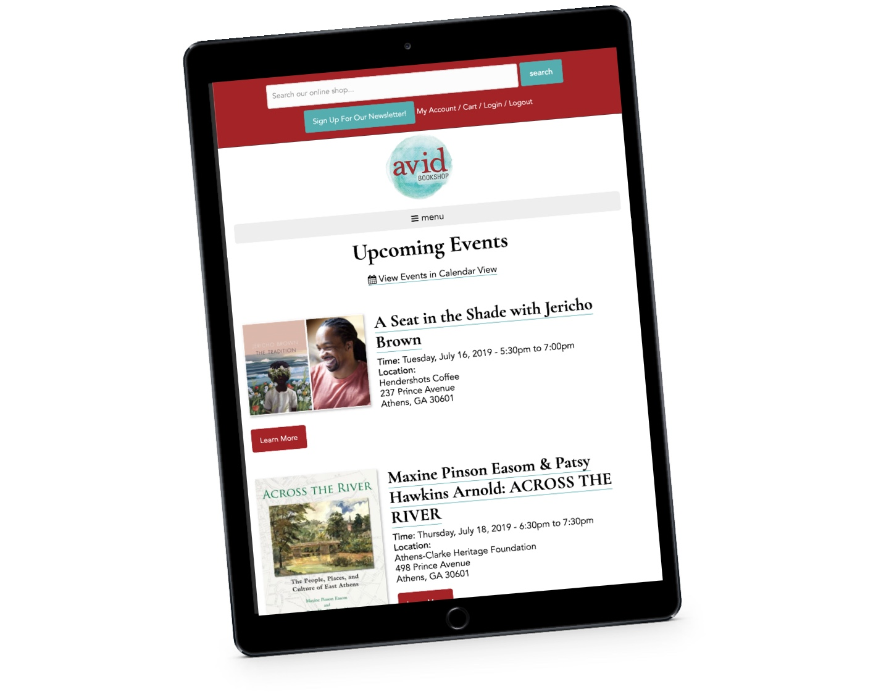
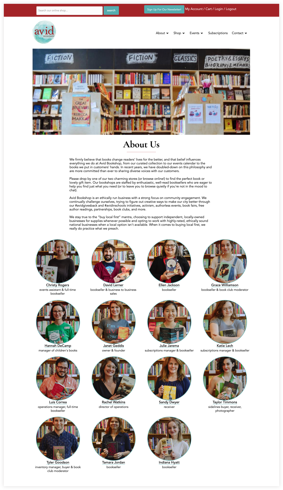
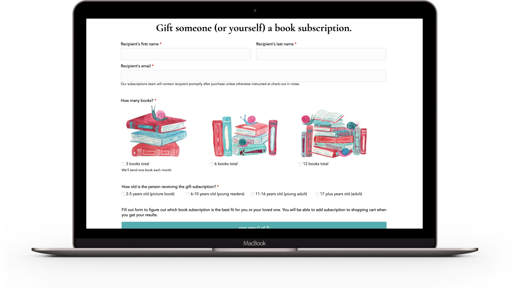
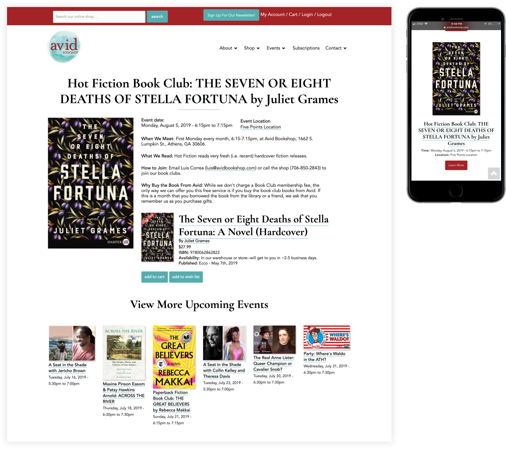

As an avid reader myself, working with Avid Bookshop is always a joy. Avid Bookshop is a local, independent bookstore with two locations in Athens, Georgia. Avid is a powerhouse in the independent bookstore industry; frequently in the national press and an established destination for most book tours. Avid Bookshop has an online store with 1 million + books in stock because it is part of American Booksellers Association’s Indie Commerce platform. The Indie Commerce platform is based on Drupal, and that’s how Avid and I first connected. They needed help with their Drupal website, and I’m one of the few developers in the Athens, Georgia area that is an expert in Drupal web development.

I originally designed and developed a website for Avid Bookshop on Drupal using a custom Drupal theme in 2016. Three years later, in 2019, Avid Bookshop wanted a design refresh. I love the opportunity to return to older work of mine and apply a fresh, new look. Avid wanted the new website to be colorful, creative, clean and user-friendly. We achieved this by removing extra content from the site that was cluttering the design, applying new typography to the site and including new photography and illustrations.

Avid Bookshop’s two locations are creative and delightful in-person, and we wanted that same experience on the website. This was achieved through custom illustrations for the book clubs and subscriptions.

Another goal for the new website was converting the upcoming events page from a calendar view to a list view. Calendar’s are not mobile friendly and do not allow for large visuals. A list view of events is responsive friendly and can feature legible, eye-catching content for individual events.

The site design showcases imagery of the bookshop and booksellers with a clean and white design. The staff picks section of the Avid Bookshop website is great place to pick your next read!

Avid Bookshop offers a personal and unique way to experience books through their subscriptions program. People can purchase a book subscription for themselves or a loved one and receive a book every month in the mail. The books are personally tailored to the recipient’s interests. The website needed to feature a clear, easy way to sign up and purchase book subscriptions. We achieved this through a custom sign-up form that featured illustrations and conditional logic to guide purchasing decisions.

The Avid Bookshop has two main focuses: driving book sales and promoting events. Avid Bookshop hosts multiple events every month, as well as book clubs. The individual event pages feature information on location, time and books for sale.